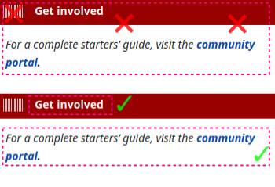

Frequently Asked Questions
A knowledge base for common issues and additional information.
General
How can I add additional languages to NormCap?
The prebuild packages are shipped with support for English
only. To install additional languages, click the settings icon and in the
"Languages" section of the menu "add/remove...".
If you installed NormCap as Python package, refer to the
online documentation on how to install additional language for Tesseract on
your system.
How can I improve the detection accuracy?
The quality of detections is mainly determined by
Tesseract, an open source
project for OCR mainly of printed text. NormCap builds upon this
great library and can influence the quality only a bit by preprocessing the
images regarding screen specific properties. You, the user, have much
more influence on the quality by paying attention to certain aspects:
-
Select the correct language – To specify the correct
language(s) in the settings menu is the very important. But keep in mind:
selecting multiple languages at once slows down the recognition a bit.
-
Avoid selecting decorations – The text detection is very
sensible to elements other than text, for example borders, lines or
icons. If possible, do not select those:

-
Avoid heterogeneous colors – If the text you want to
recognize has different backgrounds, it can help to select those portions
of text separately:

-
Zoom in – If possible, enlarge the region you want to detect,
before selecting it with NormCap. This has a huge effect in situations,
where zooming in doesn't decrease the quality, e.g. zooming into webpages,
PDF documents or images which are not yet at their full resolution. It has
little effect, if enlarging decreases the quality, e.g. for images with
low resolutions.
-
Select more text – Sometimes Tesseract struggles with
recognizing text with only very few characters, like a single word. In
this case, selecting a larger portion of text can improve the accuracy.
-
Try different language models – The prebuild NormCap packages
are using
tessdata-fast
models, which offer a very good accuracy to speed compromise. But you can
also try the slower and larger models from
tessdata
or
tessdata-best
instead.
To find the directory in which you have to put the manually downloaded
models navigate to the "Language" section of NormCap's settings, then
click "add/remove" and finally "View tessdata folder in File Manager".
-
Report examples – If the results are still bad, please submit
a screenshot of the text you are trying to recognize
as an issue.
Chances are small, but we might be able to improve something.
Is my image/text analyzed in The Cloud™?
No. The text recognition is performed offline using the OCR framework
Tesseract.
Is any other data send to the internet?
No telemetry data is collected and by default also no other data is sent
anywhere.
However, some (optional) features require accessing resources on the web and
therefore expose minimal information (like IP address) to the accessed
server:
-
If you enable the check for updates on start, the application checks
NormCap's releases page on GitHub.
-
If you download additional languages, they are being fetched from GitHub,
too.
Can I start NormCap via a keyboard shortcut?
Yes, but you'll have to configure it on your own using your operating
system's tools:
Ask your preferred search engine for support or different ways to do this.
How can I start NormCap in the background?
To launch NormCap minimized to system tray without triggering a capture, use
the `--background-mode` command line flag. This is e.g. useful, if you want
to autostart NormCap after system start.
Note that `--background-mode` automatically enables the setting "Keep in system
tray"!
Why is the Windows-Installer's file size so large?
NormCap's MSI installer is much larger than the ones for Linux and macOS
because the included
Tesseract binaries are
larger.
NormCap used to include a set of smaller binaries, which resulted in more
consistent installer file sizes for all operating systems. Unfortunately,
they seemed to lack some dependencies and lead to issues on some Windows
systems. Hopefully, the larger binaries will fix this issue. This decision
is not set in stone, so please
feel free to leave some feedback
regarding this topic!
Are there alternatives to NormCap?
Some applications offer similar features like NormCap and might be a good or
even better alternative for you: It completely depends on your use case and
requirements. Some similar open-source Projects are:
Troubleshooting
How to get debug information?
You can start NormCap from the command line with the verbosity option to get
an idea about what it is doing. The command to run depends on the OS and
install method.
-
With Python package:
Run: normcap -v debug
-
On Windows (MSI):
Run:
%LOCALAPPDATA%\Programs\dynobo\NormCap\NormCap.exe -v debug
-
On macOS (DMG):
Run:
/Applications/NormCap.app/Contents/MacOS/NormCap -v debug
-
On Linux (AppImage):
Run: ./NormCap-{version}-x86_64.AppImage -v debug
-
On Linux (FlatPak):
Run:
flatpak run --command=normcap com.github.dynobo.normcap -v
debug
-
On Linux (AUR):
Run: normcap -v debug
NormCap is not starting
Please try to take a look at the
debug information. It might provide enough
information for you to solve the issue for yourself. If it doesn't help you,
don't hesitate to
report your problem
description together with debug information.
[Linux] Normcap does not show up in system tray
Is your display environment Gnome Shell? Then you probably need to install a
Gnome Shell extension
to support showing applications in the top bar, e.g.:
[Linux] NormCap doesn't show a notification after capture
NormCap's notifications depend on the system tray functionality. If you
start NormCap, but its Icon doesn't appear in the system tray, proceed like
in the question above.
[Linux] Error: Could not load the Qt platform plugin
In case you get an output like this...
$ normcap
QtFatalMsg - This application failed to start because no Qt platform plugin
could be initialized. Reinstalling the application may fix this problem.
Available platform plugins are: eglfs, linuxfb, minimal, minimalegl, offscreen,
vnc, wayland-egl, wayland, wayland-xcomposite-egl, wayland-xcomposite-glx, webgl, xcb.
... the chances are, some system packages are missing or outdated. Please
ensure you have the following packages installed:
qt6-baseqt6-wayland (only when using Wayland)libxcb (only when using X.Org)
Those are the package names on Arch Linux, other Linux distributions
might call have named them differently.
[Linux] NormCap doesn't copy the results to clipboard when launched via
shortcut
This is behavior
was observed only on KDE + Wayland (#422)
so far, and only when NormCap was started via a keyboard shortcut / key
binding. The root cause is still unknown, if you have any information or
ideas, please comment in the ticket above.
Strangely, a workaround seems to be to configure the keyboard shortcut via
"System Settings" → "Shortcuts" → "Add command" and configure the command in
a way, that it pipes the output to somewhere, e.g. /dev/null:
normcap 2>&1 | tee /dev/null
[Linux, AppImage] Error: AppImages require FUSE to run
This is not a NormCap issue but a requirement for AppImages. You need to
make sure, that the FUSE library is installed on your system.
E.g. on Ubuntu 22.04 you need to run sudo apt install libfuse2.
See
this blog post for details.
[Linux, AppImage] Error while loading shared libraries: libcrypt.so.1
The
application used to package the AppImage
has a number of runtime requirements. One of those requirements is
libcrypt.so.1, which should be provided by most modern Linux
distributions, as it is mandated as part of the Linux Standard Base Core
Specification. However, some distributions don't include
libcrypt.so.1 as part of the base OS configuration. This can
usually be fixed by installing the libxcrypt-compat package.
[macOS] When NormCap is started, an empty desktop shows up
This issue usually occurs on the after installing NormCap, either for the
first time or after an update.
This is a known issue related to macOS's permissions settings: If NormCap
doesn't have the system's permission to take a screenshot, an empty desktop
will be shown.
(To be precise: NormCap doesn't know that it lacks permissions,
tries to take a screenshot nevertheless, which results in a screenshot of
the empty desktop.)
Steps to solve this:
- Close NormCap, if it is running.
-
Navigate to "System Preferences" → "Security & Privacy" → "Privacy" →
"Screen Recording" → "Click unlock".
-
Do you already see "NormCap" on the right side? If yes, "remove" [ – ] it.
Un-ticking the checkbox is not enough!
- Click "add" [＋] → "Applications" → "NormCap".
-
Confirm that you see NormCap on the right side with a checkmark in front
of it.
- Start NormCap, it should work now.
-
You might need to repeat those steps after installing a new version of
NormCap.
Hopefully, this cumbersome user experience can be improved in a future
release.
Development
"No such file or directory" error when running briefcase build
To verify, if this is the issue you are facing, run the docker image
interactively and try to run the linuxdeploy-*.AppImage file
there:
$ docker run -it \
--volume /home/<USER>/<PROJECT PATH>/normcap/linux:/app:z \
--volume /home/<USER>/.briefcase:/home/brutus/.briefcase:z \
--env VERSION=0.2.0 briefcase/eu.dynobo.normcap:py3.9 \
/bin/bash
$ /home/brutus/.briefcase/tools/linuxdeploy-x86_64.AppImage
If that results in a `No such file or directory` error, according to
this issue
and
this one
a workaround is to correct the "magic" bytes of the AppImage. This worked
for me:
sed '0,/AI\x02/{s|AI\x02|\x00\x00\x00|}' -i linuxdeploy-x86_64.AppImage